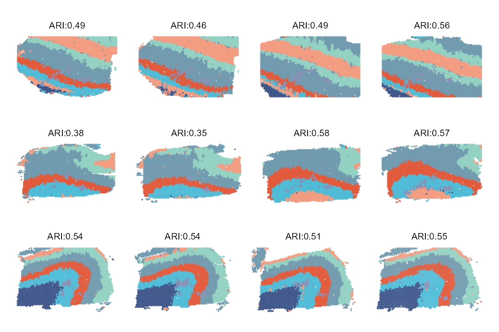

It is best to save the code below in an R file named dlpfc12.R and then run it on the server.
# ---------------------------- packages
library(stadia)
# ---------------------------- data
load("./data/dlpfc12.RData")
K <- 7
etas <- 2.3
# ---------------------------- model
d <- 35
set.seed(125)
system.time({
## set hyperparameters
hyper <- HyperParameters(dlpfc12, dim = d, eta = etas)
## run model
dlpfc12_stadia <- stadia(dlpfc12, hyper, dim = d, n_cluster = K,
platform = "visium", em.maxiter = 30)
})
# ---------------------------- save result
if(!dir.exists('./result')) dir.create('./result')
save(dlpfc12_stadia, file = "./result/dlpfc12_stadia.RData")First, load the dependent packages and the data.
library(dplyr)
library(mclust)
library(ggplot2)
library(patchwork)
library(Seurat)
load("./data/dlpfc12.RData")
load("./result/dlpfc12_stadia.RData")
clusterCol <- c("#E15839", "#4DBBD5FF", "#6F99ADFF", "#3C5488FF", "#F39B7FFF", "#8491B4FF", "#91D1C2FF")Merge the list of Seurat object dlpfc12 and save the results of STADIA dlpfc12_stadia in it.
# summary result
sample_info <- rep(paste0("person_", 1:3), each = 4)
dlpfc.pp <- mapply(function(x, y) {
x$orig.ident <- y; return(x)}, dlpfc12, sample_info)
dlpfc.merge <- merge(
x = dlpfc.pp[[1]],y = dlpfc.pp[-1],
add.cell.id = names(dlpfc.pp), project = "dlpfc")
dlpfc.merge <-
dlpfc.merge[,dlpfc.merge@meta.data[,paste0('nFeature_', DefaultAssay(dlpfc.merge))] > 200]
dlpfc.merge$stadiaAnnotation <- as.vector(dlpfc12_stadia$c_vec)
df <- dlpfc.merge@meta.data %>%
mutate_at("stadiaAnnotation", as.factor)
slice_No <- sapply(
dlpfc.merge@images,
function(x) {nrow(slot(x, "coordinates"))})
slice_info <- rep(paste0("slice", 1:12), times = slice_No)
df <- cbind(df, slice = factor(slice_info))Calculate the ARI of the domains identified by STADIA and the ground truth in the original publication using the adjustedRandIndex function in the mclust package.
ARI <- data.frame()
for(i in 1:12) {
df2use <- df[df$slice == paste0("slice", i),]
col <- "stadiaAnnotation"
ARI <- rbind(ARI, adjustedRandIndex(df2use$annotation, df2use[,col]))
}
colnames(ARI) <- "ARI"Visualize the spatial domains identified by STADIA with the corresponding ARI.
ps_stadia <- list(length=12)
for(i in 1:12){
slice <- unique(df$slice)[i]
ps_stadia[[i]] <-
ggplot(df[df$slice == slice,], aes(col,row)) +
geom_point(size = .3, shape = 21, color = "#00000000", aes(fill = factor(stadiaAnnotation))) +
scale_fill_manual(values = clusterCol) +
labs(subtitle = paste0("ARI:", round(ARI$ARI[i], 2)))
ps_stadia[[i]] <- ps_stadia[[i]] +
coord_equal() + scale_y_reverse() +
theme(panel.background = element_blank(),
axis.title = element_blank(),
axis.text = element_blank(),
axis.ticks.length = unit(0, "pt"),
axis.ticks.length.x = NULL,
axis.ticks.length.x.top = NULL,
axis.ticks.length.x.bottom = NULL,
axis.ticks.length.y = NULL,
axis.ticks.length.y.left = NULL,
axis.ticks.length.y.right = NULL,
legend.position = "none",
plot.subtitle = element_text(size = 8, color = "black"))
}
wrap_plots(wrap_plots(ps_stadia[1:4], nrow = 1),
wrap_plots(ps_stadia[5:8], nrow = 1),
wrap_plots(ps_stadia[9:12], nrow = 1),
nrow = 3) &
theme(plot.subtitle = element_text(hjust = 0.5, vjust = -0.5))